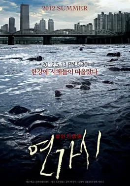

The genetics
The epidemic is caused by an engineered parasite. A pharmaceutical research team created a mutant horsehair worm able to infect mammals in order to study how it controls its host's brain, hoping to find treatments for diseases such as Alzheimer's. After the company was taken over, researchers and the chief executive deliberately released the parasite and hoarded the only cure to profit from the stock market. The film is above all a critique of corporate greed: a legitimate research project becomes a weapon in the hands of people driven by money, while the hero, a biochemist, saves the day by recognising that the drug can be copied. Real horsehair worms do drive their insect hosts into water, but they cannot infect humans, and engineering one that could is pure fiction.
How genetics is portrayed
- Overall portrayal of genetics
- negative Research meant to cure becomes a weapon for profit and sets off an epidemic, and the film ends on the ominous hint that the parasite has reached New York; the hero's contribution is copying a drug, which is chemistry, not genetics.
- Outcome of the genetic intervention
- negative The engineered parasite causes a deadly national epidemic and panic; it is stopped only when the hoarded drug is copied, and a final body in New York Harbor suggests it has spread abroad.
- ChoA Pharmaceuticals' original research team
- ambivalent Aim: benevolent, curiosity (positive). The team created a mammal-infecting mutant horsehair worm to study brain control in search of treatments for diseases such as Alzheimer's; their work is legitimate but becomes the source of the epidemic.
- ChoA's CEO and conspiring researchers
- villain Aim: commercial (negative). After the takeover they release the parasite and hoard the only cure to manipulate the share price; the film condemns them as greedy, the CEO is arrested and the researchers flee abroad.
The story
Bodies begin to appear in Seoul's Han River, killed by mutant parasitic horsehair worms, Yeongasi, which normally infect insects but now infect humans and control their brains, driving them to jump into water when the worms mature. Jae-hyuk, a former biochemistry professor turned pharmaceutical salesman, struggles to save his infected wife and children while his detective brother investigates. Ordinary anthelmintics prove deadly, and when one drug, Windazole, is said to cure the infection, supplies vanish and its maker, ChoA Pharmaceuticals, refuses to disclose its formula. The detective discovers that ChoA's former researchers had created the mutant parasite while studying brain control, and that after the company was sold, disgruntled researchers released it and hoarded the cure to manipulate the share price. The CEO is arrested, and Jae-hyuk realises that the active ingredient can be reproduced, so other companies quickly produce a cure.